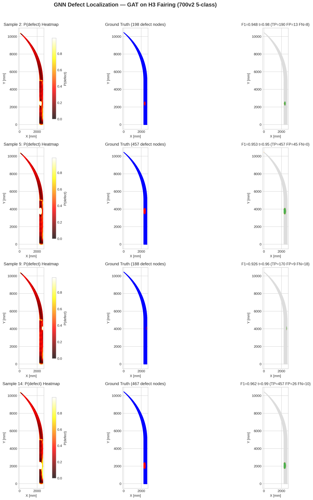
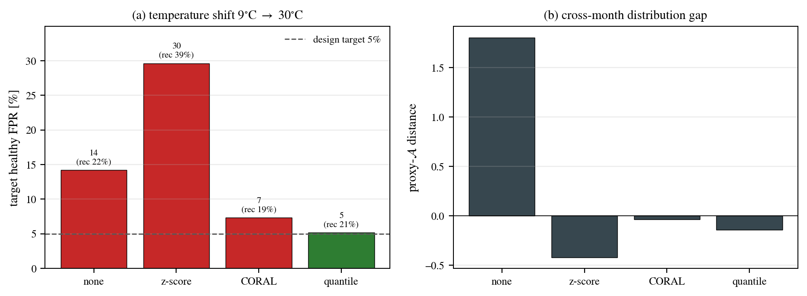

Selected results from the H3 fairing GNN-SHM work — detection, characterization, sim2real reliability, separation dynamics and prognosis. Numbers are dataset-specific; each figure notes its source. Updated monthly.
0.93–0.96
Node-level F1 (FEM)
0.99
Binary AUROC (OGW)
14→5%
FPR under temp. shift
0.999
Separation AUC
01 — Detection
Defect localization on the fairing
A GAT predicts per-node defect probability on the curved H3 fairing mesh.

Fig. 1 — GNN defect localization (GAT, 5-class)
Left: predicted P(defect). Center: ground truth. Right: detection result. Node-level F1 = 0.926–0.962 across the four validation samples shown.
F1 0.93–0.96FEM · H3 fairing
02 — Characterization & reliability
Calibrated confidence
Beyond yes/no: defect type and location heads, with temperature scaling so confidence can be trusted.
Type head (OGW): ECE 0.071 → 0.048. Binary head (FEM): ECE 0.024, already well-calibrated. Location 5-class: ECE 0.383 → 0.253 — still the weakest head and an open item.
Type acc 85.6%Binary AUROC 0.99Location calib: open
03 — Sim2real
Holding false alarms under temperature shift
Real guided-wave data drifts with temperature. Label-free alignment brings the healthy false-positive rate back to the design target.

Fig. 3 — Domain adaptation on long-term real GW data
Temperature shift 9 °C → 30 °C. Healthy FPR: none 14%, z-score 30%, CORAL 7%, quantile 5% (meets the 5% design target). Right: proxy-A distance between months shrinks after alignment. Recall stays ~20%, so the trade-off is reported, not hidden.
FPR 14% → 5%OGW · real dataRecall ~21%
04 — Beyond the static fairing
Separation dynamics and prognosis
The same graph stack carried to fairing separation events, and a go/no-go prognosis demo.
Nominal ascent: OK. Max-Q gust and abort/overload: RETIRE (expected cost 100:1). Shown on a CFRP panel; the fairing prognosis still uses representative (synthetic) growth data.
CFRP panel demoPrognosis: synthetic
05 — Update log
Monthly updates
One row per monthly report. New figures go into the sections above.
Month
Update
2026-10
Results page created. Hydrogen-tank FE model implemented: Abaqus build, dome thrust and skirt boundary, localized defect patches, cohesive bond line for insulation debond. Closed-form M1 answer key added to the design note; first-sample validation pending.
Next: hydrogen tank M1 (one healthy sample on the cluster). See the design note.